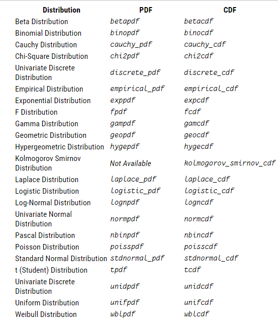
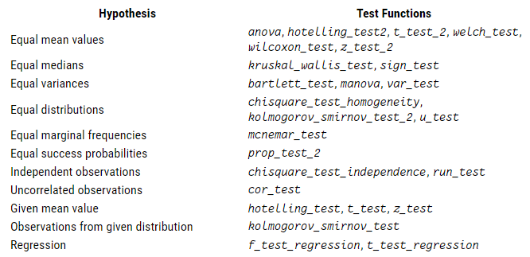
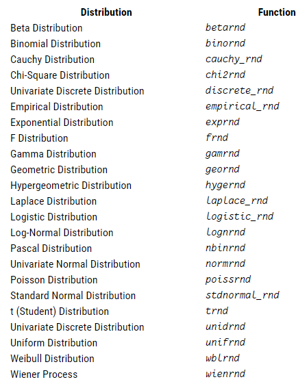

Увод у статистику
>> A = [1 8 3; 4 2 9; 5 8 8]
A =
1 8 3
4 2 9
5 8 8
>> mean(A)
ans =
3.3333 6.0000 6.6667
>> median(A)
ans =
4 8 8
>> mode(A)
ans =
1 8 3
>> range(A)
ans =
4 6 6
>> std(A)
ans =
2.0817 3.4641 3.2146
Још неке корисне функције
center(x) је функција која за параметар узима матрицу x, у свакој колони одузима средњу вредност елемената колоне од вредности у колони и као резултат враћа матрицу са измењеним вредностима.
>> center(A)
ans =
-2.3333 2.0000 -3.6667
0.6667 -4.0000 2.3333
1.6667 2.0000 1.3333
nchoosek (n, k) је функција која рачуна број начина да се од n елемената скупа одабере k.
>> nchoosek(5,2)
ans = 10Расподеле
Octave има подршку за рачунање густине расподеле и функције расподеле случајних величина. На слици испод су приказане подржане функције расподеле и густине.
На пример, за биномну расподелу имамо следеће функције:
binopdf(x,n,p) је функција која за сваки елемент x рачуна функцију густине вероватноће биномне расподеле са параметрима n и p, где је n број понављања експеримента и p је вероватноћа успеха.
>> binopdf(A,5,0.3)
ans =
0.3601 0 0.1323
0.0284 0.3087 0
0.0024 0 0
binocdf(x,n,p) је функција која за сваки елемент x рачуна функцију расподеле вероватноће биномне расподеле са параметрима n и p, где је n број понављања експеримента и p је вероватноћа успеха.
>> binocdf(A,5,0.3)
ans =
0.5282 1.0000 0.9692
0.9976 0.8369 1.0000
1.0000 1.0000 1.0000
Статистички тестови
Статистички тест обезбеђује механизам за доношење квантитативних одлука о процесу. Намера је да се утврди да ли има довољно доказа да се одбаци хипотеза о процесу.
Octave има могућност да изврши много различитих статистичких тестова. Следећа табела приказује доступне тестове:

Испод је наведен пример употребе теста cor_test за испитивање да ли два узорка x и y потичу из
некорелисаних популација.
cor_test (x, y, alt, method)>> x = [2 5 7 4 77 12 55]
x =
2 5 7 4 77 12 55
>> y = [1 7 6 4 100 10 44]
y =
1 7 6 4 100 10 44
>> cor_test(x,y,"!=","pearson")
pval: 0.000336772
ans =
scalar structure containing the fields:
method = Pearson's product moment correlation
params = 5
stat = 8.6737
dist = t
pval = 3.3677e-04
alternative = !=
Опциони аргумент alt описује алтернативну хипотезу и може бити "!=" (различито), "<>" (није нула), ">" (веће од 0) или "<" (мање од 0). Опциони аргумент method одређује који коефицијент корелације треба користити за тестирање. Ако је метод „pearson” (подразумевано), користи се уобичајени коефицијент корелације Пирсоновог момента производа. У овом случају, подаци би требало да потичу из биваријантне нормалне дистрибуције. Иначе, друге две методе нуде непараметарске алтернативе. Ако је метод "kendall" , онда се користи Кендалова корелација, а ако је метод "spearman" , онда се користи Спирманова корелација.
Излаз је структура са следећим елементима:
pval: p-вредност теста.
stat: Вредност статистике теста.
dist: Дистрибуција тест статистике.
params: Параметри нулте дистрибуције тест статистике.
alternative: Алтернативна хипотеза.
method: Метода која се користи за тестирање.
Генерисање случајних бројева
Octave има могућност да генерише насумичне бројеве из великог броја расподела. Следећа табела приказује доступне генераторе случајних бројева:

Примери коришћења функција за генерисање случајних бројева при одређеној расподели:
unifrnd (a, b, r) је функција која враћа квадратну матрицу димензије r која садржи вредности случајне величине која има униформну расподелу на интервалу [a,b].
>> unifrnd(0,1,4)
ans =
0.124071 0.020102 0.747697 0.593319
0.172212 0.099552 0.584464 0.030663
0.102348 0.795953 0.424597 0.429730
0.530988 0.983162 0.533456 0.516839
betarnd (a, b, r) је функција која враћа квадратну матрицу димензије r која садржи вредности случајне величине која има униформну бета расподелу са параметрима a и b.
>> betarnd(2,5,4)
ans =
0.319193 0.492304 0.280483 0.211264
0.134459 0.459082 0.532300 0.235951
0.312694 0.219160 0.045000 0.394731
0.311992 0.176857 0.216096 0.307594